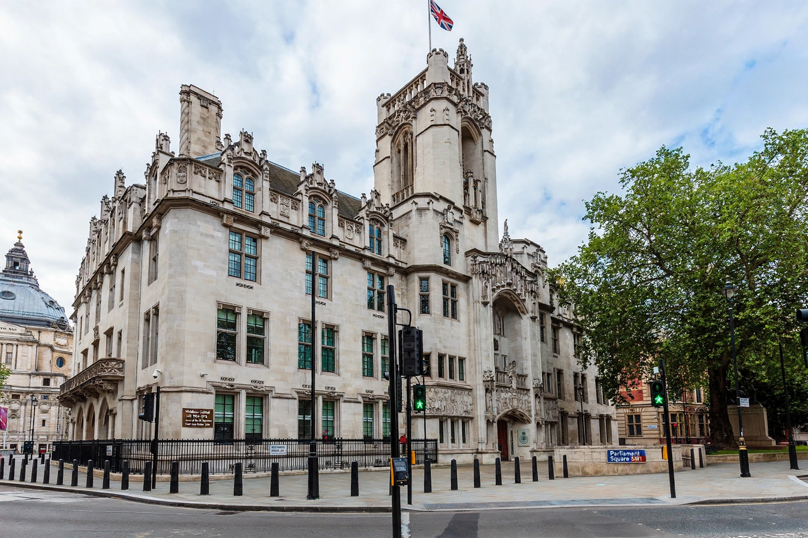

Constitutional Reform Act 2005
From Wikipedia, the free encyclopedia

The Constitutional Reform Act 2005 is an Act of the Parliament of the United Kingdom that reformed the office of Lord Chancellor, created the Supreme Court of the United Kingdom and established the Judicial Appointments Commission. Enacted as part of Tony Blair's constitutional reforms, it ended the Lord Chancellor's triple role as cabinet minister, speaker of the Lords and head of the judiciary, and removed the Law Lords from the legislature to a separate court that opened in October 2009.
Origins
The reforms were announced abruptly in a June 2003 reshuffle — Lord Irvine's removal, the announced abolition of his office — provoking accusations of casual constitutionalism. The Act as passed preserved the Lord Chancellor's office in reformed guise (no longer necessarily a lawyer or peer), guaranteed judicial independence by statute for the first time, and created selection processes designed to depoliticise appointments.
The Supreme Court
The new Court — twelve Justices, its first president Lord Phillips — took over the Judicial Committee of the House of Lords' appellate role and the Privy Council's devolution jurisdiction, sitting in the Middlesex Guildhall across Parliament Square. Its visibility rose sharply with the prorogation judgment of 2019 (Miller II), which made its president, Lady Hale, and her spider brooch, briefly famous worldwide.